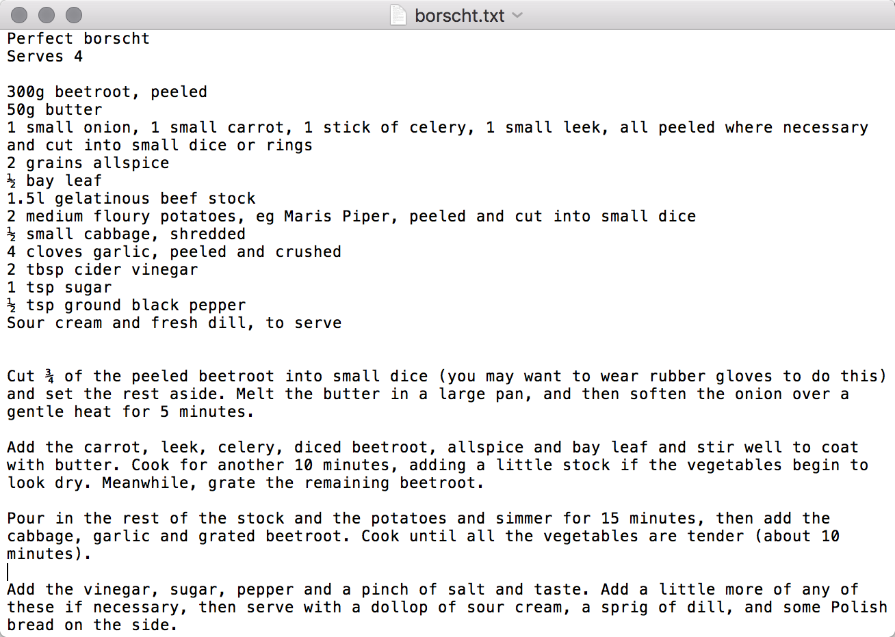
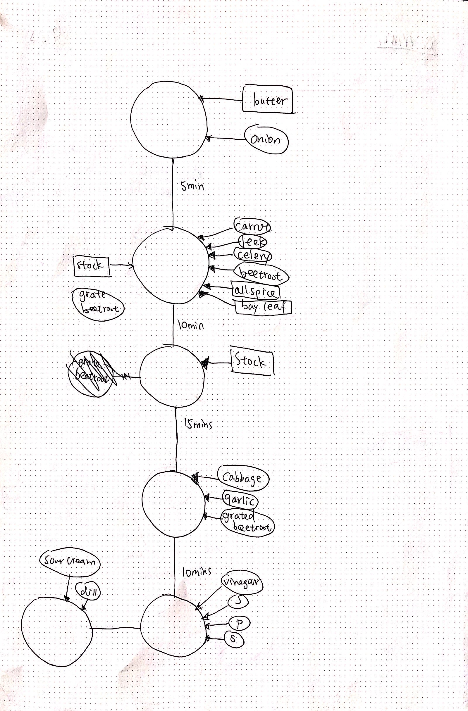
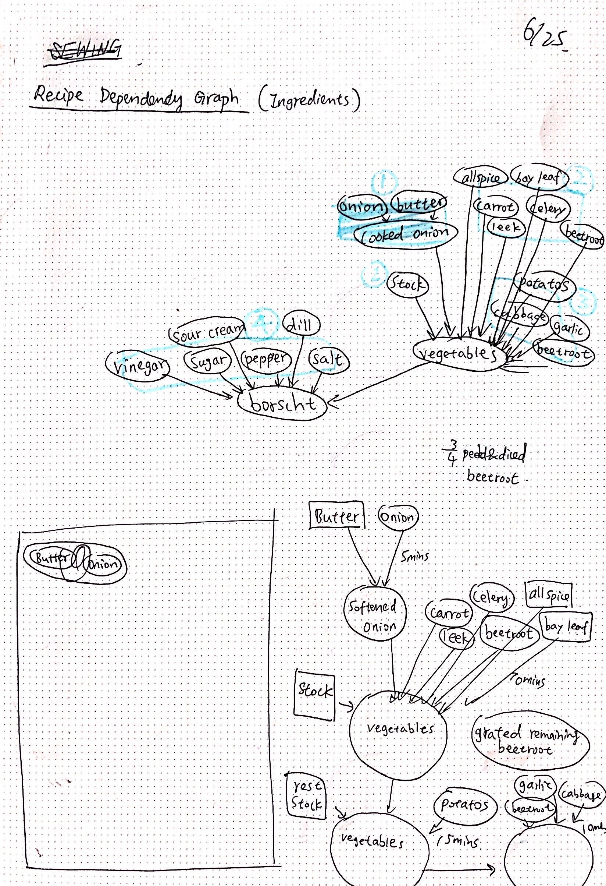

Perfect Borscht

02/07
10 formats with pure HTML
1
2
3
4
5
1
2
3
4
5
02/14
10 formats with HTML and CSS
1
2
3
4
5
6
7
8
9
10
"Does this recipe work in this format?
What is the trade-off for convention and novelty here?
Are there some types of recipes that work better one way than another?
What does it mean for a recipe to work? What other kinds of rules and instructions follow these kinds of structural conventions?
What would it mean if a recipe was a conversation?
Or IKEA instructions?
Or like a table with chairs around it, indicating where you should sit?"
It’s a very standard recipe. I think letting people understand what they should do and be willing to take actions is the most important function of a recipe.
In order for a very basic recipe to work, I prefer arranging information in categories with logic, rather than narratives.
However, sometimes following a random and even poetic recipe to cook is fun for me, especially when I’m not in a rush.
When I cook, I like to have the right ingredients required for a specific instruction next to me when I am following this step.
To transform this way of cooking into the layout of a recipe, I played around with grouping together a step and the ingredients needed for it.


inspired by RECURSIVE RECIPES